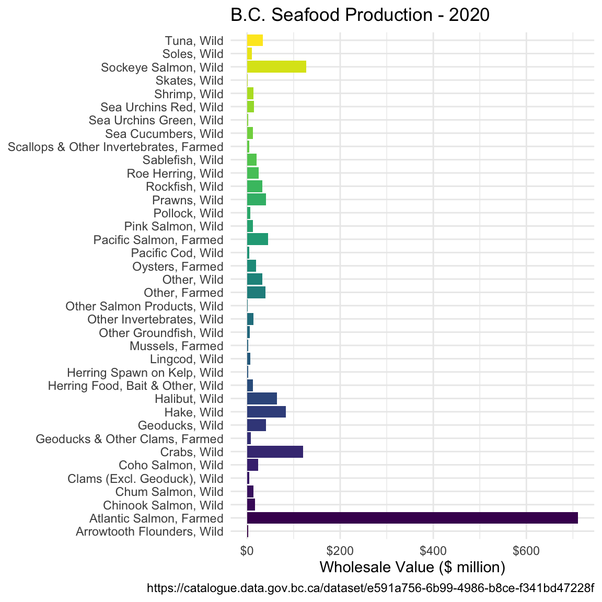

10 Introduction to the bcdata package
The British Columbia government hosts over 2000 tabular and geospatial data sets
in the B.C. Data Catalogue. Most data is available through the B.C. Data
Catalogue under an open licence. The bcdata package provides programming
interfaces the B.C. Data Catalogue. This allows R users to search, download and
import metadata and data from the B.C. Data Catalogue into their R session.
Through this functionality the bcdata package connects British Columbia
government public data holdings in the B.C. Data Catalogue with the vast
capabilities of R.
10.1 Getting started
First we need to install the bcdata package:
install.packages("bcdata")And next we need to load the bcdata package, along with dplyr and ggplot2 which we installed and used in earlier lessons:
10.2 Searching the B.C. Data Catalogue
Let’s use the bcdata package to search the B.C. Data Catalogue for some data on public libraries in British Columbia:
bcdc_search("public libraries", n = 5)Found 18 matches. Returning the first 5.
To see them all, rerun the search and set the 'n' argument to 18.List of B.C. Data Catalogue Records
Number of records: 5
Titles:
1: BC Public Libraries Statistics 2002-Present (xls, xlsx, csv)
ID: d03007d6-d6c7-44d7-b2f8-710ba9433617
Name: bc-public-libraries-statistics-2002-present
2: BC Public Libraries Systems - Branches and Locations (multiple, csv,
xlsx, kml, wms)
ID: 3d2318d4-8f5d-4208-88f5-995420d7c58f
Name: bc-public-libraries-systems-branches-and-locations
3: BC Web Map Library (kml, wms)
ID: 6164a2af-d3ac-4e92-8dbe-51a93bb5e24b
Name: bc-web-map-library
4: Environmental Protection Information Resources e-Library (other)
ID: dae0f2c3-b4f4-4d16-a96d-d7fe7c1581f3
Name: environmental-protection-information-resources-e-library
5: Biodiversity/Environmental Information Resources e-Library (html)
ID: a77d4986-91a1-42fc-8e5c-51a304c7975e
Name: biodiversity-environmental-information-resources-e-library
Access a single record by calling `bcdc_get_record(ID)` with the ID
from the desired record.There are many catalogue records with data relating to libraries. Let’s examine the first returned record more closely:
bcdc_get_record("bc-public-libraries-systems-branches-and-locations")Warning: It is advised to use the permanent id ('3d2318d4-8f5d-4208-88f5-995420d7c58f') rather than the name of the record ('bc-public-libraries-systems-branches-and-locations') to guard against future name changes.B.C. Data Catalogue Record: BC Public Libraries Systems - Branches and
Locations
Name: bc-public-libraries-systems-branches-and-locations (ID:
3d2318d4-8f5d-4208-88f5-995420d7c58f)
Permalink:
https://catalogue.data.gov.bc.ca/dataset/3d2318d4-8f5d-4208-88f5-995420d7c58f
Licence: Open Government Licence - British Columbia
Description: This dataset includes contact and location data for all
library service points in BC. It also includes some primary data on
library use and services from the most current year that data is
available.
The dataset is geolocational, and is available in XLSX,
CSV, and KML formats.
Available Resources (5):
1. BC Public Library Service Points (csv)
2. 2018 BC Public Library Systems - Locations and Branch Data (XLS) - v19 (xlsx)
3. 2018 BC Public Library Systems - Locations and Branch Data (CSV) - v19 (csv)
4. 2015 BC Public Library Systems - Locations and Branch Data 1.2 (KML) (kml)
5. WMS getCapabilities request (wms)
Access the full 'Resources' data frame using:
bcdc_tidy_resources('3d2318d4-8f5d-4208-88f5-995420d7c58f')
Query and filter this data using:
bcdc_query_geodata('3d2318d4-8f5d-4208-88f5-995420d7c58f')10.3 Importing data from the B.C. Data Catalogue
Next, we can use the bcdc_get_data() function to import this data directly into R:
bcdc_get_data(record = "bc-public-libraries-systems-branches-and-locations")The bc-public-libraries-systems-branches-and-locations catalogue record contains multiple data resources or files. If we run the above code interactively, R will prompt you in the console to select one of the available resources, as it does not know which one you want to download. The full code to import the resource from the record—using the record’s permanent id to guard against future name changes—is provided to the user for next time:
lib_raw <- bcdc_get_data(record = '3d2318d4-8f5d-4208-88f5-995420d7c58f',
resource = 'ed17f111-fb39-46b3-89aa-5375592fbb01')Reading the data using the read_xlsx function from the readxl package.10.3.1 Challenge 1 (5 minutes)
Take a few minutes to search the B.C. Data Catalogue for data sets for a different topic. Identify and import one tabular data set into your R session (e.g. a CSV or XLS resource). Entering
bcdc_browse()into the R console will open the catalogue page in your default web browser.
10.4 Practice manipulating data with dplyr
Let’s return to the libraries data frame lib_raw we imported. As we learned
earlier in the workshop, a useful first step is to get familiar with the data:
str(lib_raw)tibble [253 × 38] (S3: tbl_df/tbl/data.frame)
$ Library System : chr [1:253] "Alert Bay Public Library & Museum" "Beaver Valley Public Library" "Bowen Island Public Library" "Burnaby Public Library" ...
$ Location : chr [1:253] "Alert Bay Public Library & Museum" "Beaver Valley Public Library" "Bowen Island Public Library" "Bob Prittie Metrotown Branch" ...
$ 1x Branch Unique ID : chr [1:253] "BABM001" "BFBV001" "BBI001" "BB001" ...
$ School District Served : chr [1:253] "85" "20" "45" "41" ...
$ Phone : chr [1:253] "(250) 974-5721" "(250) 367-7114" "(604) 947-9788" "(604) 436-5427" ...
$ Physical Address : chr [1:253] "116 Fir Street" "1847 - 1st Street" "430 Bowen Island Trunk" "6100 Willingdon Avenue" ...
$ City : chr [1:253] "Alert Bay" "Fruitvale" "Bowen Island" "Burnaby" ...
$ Province : chr [1:253] "BC" "BC" "BC" "BC" ...
$ Postal Code : chr [1:253] "V0N 1A0" "V0G 1L0" "V0N 1G0" "V5H 4N5" ...
$ Latitude : num [1:253] 50.6 49.1 49.4 49.2 49.3 ...
$ Longitude : num [1:253] -127 -118 -123 -123 -123 ...
$ 460x Total branch physical materials, volumes held : num [1:253] 9361 25477 15100 373232 59958 ...
$ 556x Branch circulation of print and other physical materials: num [1:253] 2460 19792 36155 1139184 454254 ...
$ 565x Branch circulation of children's materials : chr [1:253] "193" "4737" "15964" "476345" ...
$ 610x Branch reference transactions : chr [1:253] "1700" "10000" "8217" "107784" ...
$ 775x In person visits to this branch or service point : chr [1:253] "3522" "14750" "52690" "749695" ...
$ 680x Branch in-library adult programs : chr [1:253] "0" "8" "499" "58" ...
$ 682x Branch outreach adult programs : chr [1:253] "1" "2" "0" "101" ...
$ 690x Attendance at adult programs : chr [1:253] "22" "202" "1381" "3865" ...
$ 700x Branch in-library children's programs : chr [1:253] "0" "100" "94" "402" ...
$ 702x Branch outreach children's programs : chr [1:253] "3" "10" "5" "39" ...
$ 710x Attendance at children's programs : chr [1:253] "235" "1208" "1224" "19522" ...
$ 715x Branch in-library young adult programs : chr [1:253] "0" "0" "0" "12" ...
$ 717x Branch outreach young adult programs : chr [1:253] "0" "0" "0" "84" ...
$ 716x Attendance at young adult programs : chr [1:253] "0" "0" "0" "2923" ...
$ 671x Branch in-library newcomer/ELL programs, all ages : chr [1:253] "0" "0" "0" "26" ...
$ 673x Branch outreach newcomer/ELL programs, all ages : chr [1:253] "0" "0" "0" "0" ...
$ 672x Attendance at branch newcomer/ELL programs : chr [1:253] "0" "0" "0" "528" ...
$ 740x Professional Librarians, hours worked at this branch : chr [1:253] "0" "0" "1820" "42224" ...
$ 742x Library Technicians, hours worked at this branch : chr [1:253] "0" "0" "0" "1733" ...
$ 752x Community Librarians, hours worked at this branch : chr [1:253] "622" "4940" "0" NA ...
$ 770x Other Staff, hours worked at this branch : chr [1:253] "281" "1350" "4107" "104199" ...
$ 975x Number of photocopiers in library branch : num [1:253] 1 1 1 4 1 1 1 2 1 1 ...
$ 852x Is this location LEED certified? : chr [1:253] NA "No" "No" "No" ...
$ 854x Is this location a Shared Space facility? : chr [1:253] NA "No" "Yes" "No" ...
$ 860x Branch space/size, total square metres : num [1:253] 213 270 407 5673 465 ...
$ 890x Hours open per year at this location : chr [1:253] "618" "2320" "1953" "3612" ...
$ 920x Days open per year at this location : chr [1:253] "191" "321" "303" "339" ...
names(lib_raw) [1] "Library System"
[2] "Location"
[3] "1x Branch Unique ID"
[4] "School District Served"
[5] "Phone"
[6] "Physical Address"
[7] "City"
[8] "Province"
[9] "Postal Code"
[10] "Latitude"
[11] "Longitude"
[12] "460x Total branch physical materials, volumes held"
[13] "556x Branch circulation of print and other physical materials"
[14] "565x Branch circulation of children's materials"
[15] "610x Branch reference transactions"
[16] "775x In person visits to this branch or service point"
[17] "680x Branch in-library adult programs"
[18] "682x Branch outreach adult programs"
[19] "690x Attendance at adult programs"
[20] "700x Branch in-library children's programs"
[21] "702x Branch outreach children's programs"
[22] "710x Attendance at children's programs"
[23] "715x Branch in-library young adult programs"
[24] "717x Branch outreach young adult programs"
[25] "716x Attendance at young adult programs"
[26] "671x Branch in-library newcomer/ELL programs, all ages"
[27] "673x Branch outreach newcomer/ELL programs, all ages"
[28] "672x Attendance at branch newcomer/ELL programs"
[29] "740x Professional Librarians, hours worked at this branch"
[30] "742x Library Technicians, hours worked at this branch"
[31] "752x Community Librarians, hours worked at this branch"
[32] "770x Other Staff, hours worked at this branch"
[33] "975x Number of photocopiers in library branch"
[34] "852x Is this location LEED certified?"
[35] "854x Is this location a Shared Space facility?"
[36] "860x Branch space/size, total square metres"
[37] "890x Hours open per year at this location"
[38] "920x Days open per year at this location" Let’s tidy up this data frame and find out how many books—physical
materials or volumes—are available between 51 and 53 degrees Latitude. Remember
that we previously used select() to return only columns that we wanted. Here we
are also using select() to rename 460x Total branch physical materials, volumes held
to num_books:
library(dplyr)
lib_tidy <- lib_raw %>%
filter(Latitude <= 53, Latitude >= 51) %>%
select(`Library System`, Location, City, num_books = `460x Total branch physical materials, volumes held`)
sum_books <- lib_tidy %>%
group_by(City, `Library System`) %>%
summarize(total_books = sum(num_books))`summarise()` has grouped output by 'City'. You can override using the
`.groups` argument.10.4.1 Challenge 2 (10 minutes)
Using
dplyr, determine the total number of books within each Library System between 51 and 53 degrees latitude in British Columbia.Solution to challenge 2
# A tibble: 5 × 2 `Library System` totals <chr> <dbl> 1 Cariboo Regional District Library System 245906 2 Okanagan Regional Library District 2350 3 Thompson Nicola Regional Library 49871 4 Valemount Public Library 6994 5 Vancouver Island Regional Library 879
10.5 Practice plotting data with ggplot2
Now that we have imported, tidied, and summarized our library data, let’s make a static data visualization to share and communicate the results with others.


10.6 Importing data from the B.C. Data Catalogue - Another Example
Let’s try another example with bcdata. This time we are going to try importing
some data that is a bit messier. We are going to work with New Apprenticeship
Registrations by Fiscal Year and
Gender
data. This example will require you to reference elements you’ve learned
throughout the workshop.
You can view the data record we are going to be working with in your browser by running the following command:
bcdc_browse("new-apprenticeship-registrations-by-fiscal-year-and-gender")As we’ve previously learned we can use bcdc_get_data() to load data from the B.C. Data Catalogue directly into R. Let’s try that now:
new_reg <- bcdc_get_data(record = "new-apprenticeship-registrations-by-fiscal-year-and-gender")Reading the data using the read_csv function from the readr package.New names:
Rows: 321 Columns: 12
── Column specification
──────────────────────────────────────────────────────── Delimiter: "," chr
(12): Notes:, ...2, ...3, ...4, ...5, ...6, ...7, ...8, ...9, ...10, ......
ℹ Use `spec()` to retrieve the full column specification for this data. ℹ
Specify the column types or set `show_col_types = FALSE` to quiet this message.
• `` -> `...2`
• `` -> `...3`
• `` -> `...4`
• `` -> `...5`
• `` -> `...6`
• `` -> `...7`
• `` -> `...8`
• `` -> `...9`
• `` -> `...10`
• `` -> `...11`
• `` -> `...12`
new_reg# A tibble: 321 × 12
`Notes:` ...2 ...3 ...4 ...5 ...6 ...7 ...8 ...9 ...10 ...11 ...12
<chr> <chr> <chr> <chr> <chr> <chr> <chr> <chr> <chr> <chr> <chr> <chr>
1 "The follo… <NA> <NA> <NA> <NA> <NA> <NA> <NA> <NA> <NA> <NA> <NA>
2 "Gender is… <NA> <NA> <NA> <NA> <NA> <NA> <NA> <NA> <NA> <NA> <NA>
3 "Fiscal Ye… <NA> <NA> <NA> <NA> <NA> <NA> <NA> <NA> <NA> <NA> <NA>
4 "Professio… <NA> <NA> <NA> <NA> <NA> <NA> <NA> <NA> <NA> <NA> <NA>
5 "... Repre… <NA> <NA> <NA> <NA> <NA> <NA> <NA> <NA> <NA> <NA> <NA>
6 <NA> <NA> <NA> <NA> <NA> <NA> <NA> <NA> <NA> <NA> <NA> <NA>
7 "Data as o… <NA> <NA> <NA> <NA> <NA> <NA> <NA> <NA> <NA> <NA> <NA>
8 "Data Sour… <NA> <NA> <NA> <NA> <NA> <NA> <NA> <NA> <NA> <NA> <NA>
9 <NA> <NA> <NA> <NA> <NA> <NA> <NA> <NA> <NA> <NA> <NA> <NA>
10 "Trade" Gend… FY20… FY20… FY20… FY20… FY20… FY20… FY20… FY20… FY20… FY20…
# … with 311 more rowsWell this doesn’t look right. We can see near the bottom of our output that
there are the words of Gender and Trade so we know the data is there but we also have this mess of <NA>.
In this scenario it can be helpful to look at the raw data. Navigate back to the
catalogue page you opened earlier and click the View button. This
will take you to the
Resource
page. Click the link under Resource and the data will open up in Excel. The
first thing we notice is that the data does not actually start until 10 rows
down. bcdc_get_data() use read_csv() to read csv files and that function
conveniently has an argument called skip which allows us to specify the number
of lines to skip before reading the data. We can use it with bcdc_get_data()
like this:
new_reg <- bcdc_get_data(
record = "new-apprenticeship-registrations-by-fiscal-year-and-gender",
skip = 10
)Reading the data using the read_csv function from the readr package.Rows: 311 Columns: 12
── Column specification ────────────────────────────────────────────────────────
Delimiter: ","
chr (12): Trade, Gender, FY2012/13, FY2013/14, FY2014/15, FY2015/16, FY2016/...
ℹ Use `spec()` to retrieve the full column specification for this data.
ℹ Specify the column types or set `show_col_types = FALSE` to quiet this message.
new_reg# A tibble: 311 × 12
Trade Gender FY201…¹ FY201…² FY201…³ FY201…⁴ FY201…⁵ FY201…⁶ FY201…⁷ FY201…⁸
<chr> <chr> <chr> <chr> <chr> <chr> <chr> <chr> <chr> <chr>
1 Aircr… Woman 8 7 9 6 ... ... ... 12
2 Aircr… Man 108 73 61 46 ... ... ... 63
3 Aircr… Total… 116 80 70 52 69 48 62 75
4 Aircr… Woman ... ... ... ... 0 ... ... ...
5 Aircr… Man ... ... ... ... ... ... ... ...
6 Aircr… Total… 27 40 42 24 ... 23 26 17
7 Appli… Woman 0 0 0 ... ... ... 0 ...
8 Appli… Man 39 ... 36 ... ... ... 11 ...
9 Appli… Total… 39 ... 36 13 32 13 11 23
10 Arbor… Woman ... 0 ... ... ... ... ... ...
# … with 301 more rows, 2 more variables: `FY2020/21` <chr>, `FY2021/22` <chr>,
# and abbreviated variable names ¹`FY2012/13`, ²`FY2013/14`, ³`FY2014/15`,
# ⁴`FY2015/16`, ⁵`FY2016/17`, ⁶`FY2017/18`, ⁷`FY2018/19`, ⁸`FY2019/20`Ok this is looking much better. We now have data that is rectangular and looks
more like something we can work with. We do have one more thing to take
care of though. You will notice the data is filled with ... values. Those are missing
values in the data. R has a specific way of handling missing values and we need
to tell bcdc_get_data() (via read_csv()) that those are missing values. We
do this by adding another argument so that R interprets the ... as missing values:
new_reg <- bcdc_get_data(
"new-apprenticeship-registrations-by-fiscal-year-and-gender",
skip = 10,
na = "..."
)Reading the data using the read_csv function from the readr package.Rows: 311 Columns: 12
── Column specification ────────────────────────────────────────────────────────
Delimiter: ","
chr (2): Trade, Gender
dbl (10): FY2012/13, FY2013/14, FY2014/15, FY2015/16, FY2016/17, FY2017/18, ...
ℹ Use `spec()` to retrieve the full column specification for this data.
ℹ Specify the column types or set `show_col_types = FALSE` to quiet this message.
new_reg# A tibble: 311 × 12
Trade Gender FY201…¹ FY201…² FY201…³ FY201…⁴ FY201…⁵ FY201…⁶ FY201…⁷ FY201…⁸
<chr> <chr> <dbl> <dbl> <dbl> <dbl> <dbl> <dbl> <dbl> <dbl>
1 Aircr… Woman 8 7 9 6 NA NA NA 12
2 Aircr… Man 108 73 61 46 NA NA NA 63
3 Aircr… Total… 116 80 70 52 69 48 62 75
4 Aircr… Woman NA NA NA NA 0 NA NA NA
5 Aircr… Man NA NA NA NA NA NA NA NA
6 Aircr… Total… 27 40 42 24 NA 23 26 17
7 Appli… Woman 0 0 0 NA NA NA 0 NA
8 Appli… Man 39 NA 36 NA NA NA 11 NA
9 Appli… Total… 39 NA 36 13 32 13 11 23
10 Arbor… Woman NA 0 NA NA NA NA NA NA
# … with 301 more rows, 2 more variables: `FY2020/21` <dbl>, `FY2021/22` <dbl>,
# and abbreviated variable names ¹`FY2012/13`, ²`FY2013/14`, ³`FY2014/15`,
# ⁴`FY2015/16`, ⁵`FY2016/17`, ⁶`FY2017/18`, ⁷`FY2018/19`, ⁸`FY2019/20`Now we are ready to work with this data. One thing you might notice is that this
data is in wide format. The number of individuals of a given Gender and
Trade are repeated over time across columns with each column being a fiscal
year. This is great for making a nice table but less great if we want to make a
plot. To reshape the data into long format, we can again make use of
pivot_longer from the tidyr package which we covered in the tidyr section. We only want to pivot the fiscal years
so we need to specify those columns. In addition, we want to give our two new
columns so descriptive names:
library(tidyr)
new_reg_long <- new_reg %>%
pivot_longer(
cols = `FY2012/13`:`FY2021/22`,
names_to = "fiscal_year",
values_to = "registrations"
)
new_reg_long# A tibble: 3,110 × 4
Trade Gender fiscal_year registrations
<chr> <chr> <chr> <dbl>
1 Aircraft Maintenance Technician Woman FY2012/13 8
2 Aircraft Maintenance Technician Woman FY2013/14 7
3 Aircraft Maintenance Technician Woman FY2014/15 9
4 Aircraft Maintenance Technician Woman FY2015/16 6
5 Aircraft Maintenance Technician Woman FY2016/17 NA
6 Aircraft Maintenance Technician Woman FY2017/18 NA
7 Aircraft Maintenance Technician Woman FY2018/19 NA
8 Aircraft Maintenance Technician Woman FY2019/20 12
9 Aircraft Maintenance Technician Woman FY2020/21 NA
10 Aircraft Maintenance Technician Woman FY2021/22 6
# … with 3,100 more rowsThere is actually quite a bit of data here while likely represents the number
possible values for Trade. We can check the number of unique values in the
Trade column using a handy function from dplyr called n_distinct():
n_distinct(new_reg_long$Trade)[1] 104Sure enough there are 104 of them! Similarly, let’s have a look at what values are in the Gender column using the unique() function you learned earlier:
unique(new_reg_long$Gender)[1] "Woman" "Man"
[3] "Total (Woman + Man)" "Non Binary / Prefer not to answer"
[5] "Grand Total" To simplify things let’s take a subset of the Trades in the data and only look at Men and Women:
new_reg_long <- new_reg %>%
pivot_longer(
cols = `FY2012/13`:`FY2021/22`,
names_to = "fiscal_year",
values_to = "registrations",
values_drop_na = TRUE
) %>%
filter(
Gender %in% c("Man", "Woman"),
Trade %in% c("Boilermaker", "Climbing Arborist", "Tilesetter", "Landscape Horticulturist", "Baker")
)With this tidied and filtered dataset, we now have something that we can plot
using the skills we’ve learned in the ggplot2 section. One thing to note is that we made
use of the ncol argument in facet_wrap() so that the faceted plots would
share the x-axis:
library(ggplot2)
ggplot(new_reg_long, aes(x = fiscal_year, y = registrations, fill = Trade)) +
geom_col() +
facet_wrap(vars(Gender), ncol = 1)Try customizing the output with different Trade categories or different ggplot2 customizations. For example what strategies might you take to tidy up the x-axis?
10.6.1 Challenge 4 (15 minutes)
Navigate to the BC Data Catalogue and choose a dataset that has a
Resource Storage Formatthat iscsvorxlsx. An example of this is the BC Seafood Production data. You can use this dataset or one of your choosing. Import your data into R and make a plot, any plot at all. Try to apply the skills you’ve learned in this workshop to make a pretty plot.Solution to challenge 4
seafood_prod <- bcdc_get_data("e591a756-6b99-4986-b8ce-f341bd47228f", "a057bfbb-8121-410b-92bb-29f445a6d1a9")Reading the data using the read_csv function from the readr package.Rows: 114 Columns: 7 ── Column specification ──────────────────────────────────────────────────────── Delimiter: "," chr (3): Species Group, Source, Species/Product dbl (4): Year, Harvest ('000 t), Landed Value ($ million), Wholesale Value (... ℹ Use `spec()` to retrieve the full column specification for this data. ℹ Specify the column types or set `show_col_types = FALSE` to quiet this message.seafood_by_year <- seafood_prod %>% filter(Year == 2020) %>% group_by(`Species/Product`) %>% summarise(value = sum(`Wholesale Value ($ million)`)) seafood_by_year %>% ggplot(aes(y = `Species/Product`, x = value, fill = `Species/Product`)) + geom_col() + scale_fill_viridis_d() + scale_x_continuous(labels = scales::dollar) + guides(fill = "none") + theme_minimal() + labs(title = "B.C. Seafood Production - 2020", x = "Wholesale Value ($ million)", caption = "https://catalogue.data.gov.bc.ca/dataset/e591a756-6b99-4986-b8ce-f341bd47228f") + theme(axis.title.y = element_blank())